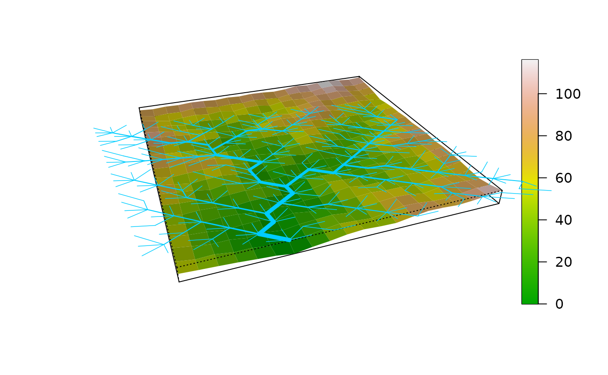

Plot 3D map of elevation generated by an OCN
draw_elev3D_OCN.RdFunction that plots the 3D elevation map generated by an OCN.
Usage
draw_elev3D_OCN(OCN, coarseGrain = c(1,1), colPalette = terrain.colors(1000, alpha = 1),
addColorbar = TRUE, drawRiver = TRUE, thrADraw = 0.002 *
OCN$FD$nNodes * OCN$cellsize^2, riverColor = "#00CCFF",
theta = -20, phi = 30, expand = 0.05, shade = 0.5, min_lwd = 0.5, max_lwd = 5,
args_imagePlot = list())Arguments
- OCN
A
riverobject as produced bylandscape_OCN.- coarseGrain
2x1 vector (only effective if
chooseCM = FALSE). For aesthetic purposes, the elevation map can be coarse-grained into aOCN$dimX/coarseGrain[1]-by-OCN$dimX/coarseGrain[2]domain, where each cell's elevation is the average of elevations of the correspondingcoarseGrain[1]-by-coarseGrain[2]cells of the original elevation field.coarseGrain[1]andcoarseGrain[2]must be divisors ofOCN$dimXandOCN$dimY, respectively.coarseGrain = c(2,2)is often sufficient to achieve a good graphical results for large (i.e. at least 100x100 nodes) OCNs.- colPalette
Color palette used for the plot.
- addColorbar
If
TRUE, add colorbar to the plot.- drawRiver
If
TRUE, draw the OCN on top of the elevation field.- thrADraw
Threshold drainage area value used to display the network.
- riverColor
Color used to plot the river.
- theta, phi, expand, shade
Additional parameters passed to the perspective plotting function
persp.thetaexpresses azimuthal direction;phigives colatitude;expandis the expansion factor for the Z coordinates;shadecontrols the shade at a surface facet.- min_lwd, max_lwd
Minimum and maximum values of line width used to display the OCN (actual line width is proportional to the square root of drainage area).
- args_imagePlot
Only effective if
addColorbar = TRUE. List of arguments passed toimagePlotfor drawing a continuous legend. For example, argumentsmallplotcan be used to specify the plot coordinates for the legend.
Examples
# draw 3D representation of a 20x20 OCN with default options
draw_elev3D_OCN(landscape_OCN(OCN_20))

if (FALSE) { # \dontrun{
# 1a) draw the 3D representation of the OCN (without displaying the river
# and the colorbar) and enhance the aspect ratio of Z coordinates
# with respect to the default value (the final result will be ugly):
OCN <- landscape_OCN(OCN_400_Allout, displayUpdates = 2) # this takes some minutes
draw_elev3D_OCN(OCN, expand = 0.2, addColorbar = FALSE, drawRiver = FALSE)
# 1b) same as above, but operate coarse graining and modify shade for better aesthetics:
draw_elev3D_OCN(OCN, coarseGrain = c(5,5), expand = 0.2,
shade = 0.25, addColorbar = FALSE, drawRiver = FALSE)
} # }